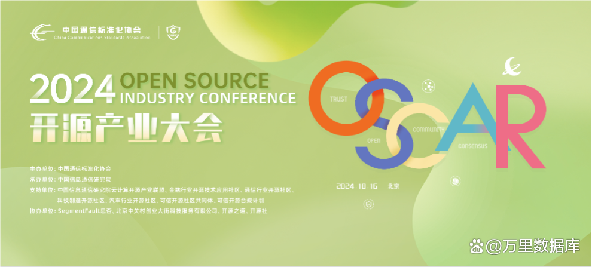
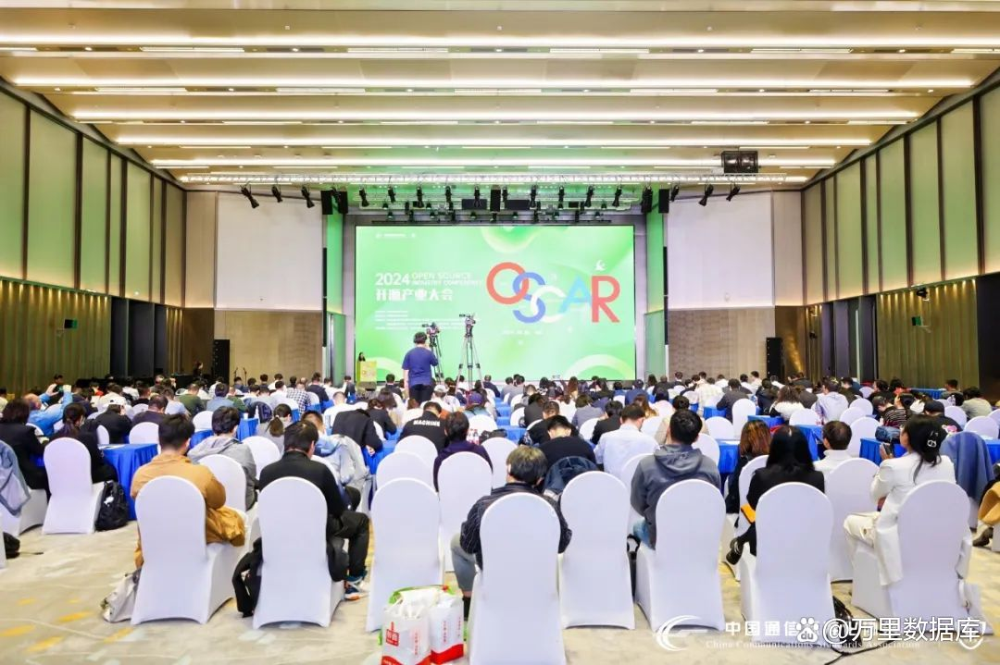
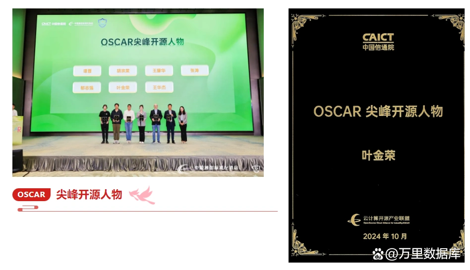
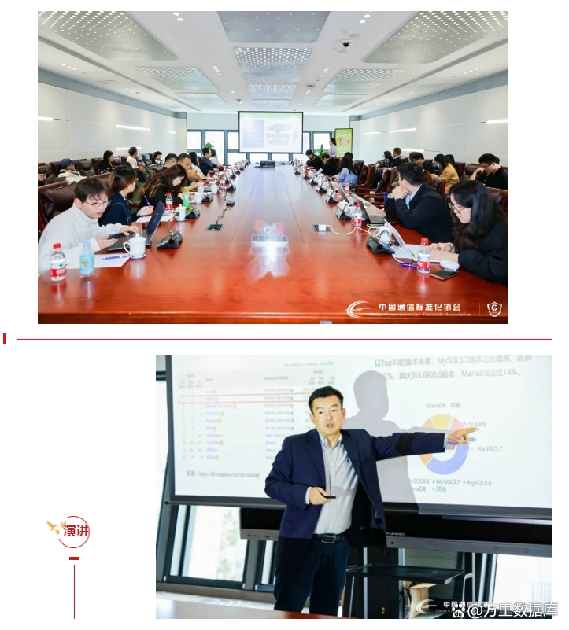
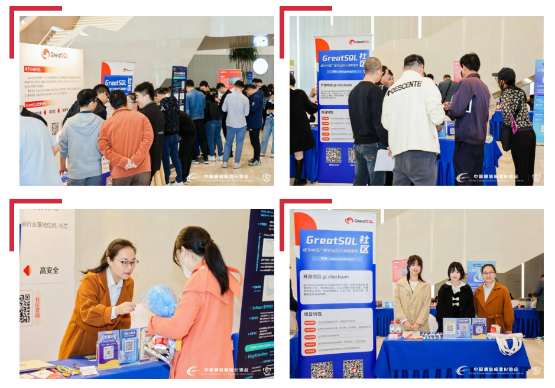

斩获殊荣！GreatSQL亮相2024 OSCAR开源产业大会 彰显开源实力
10月16日，由中国通信标准化协会主办，中国信息通信研究院承办的开源领域年度盛会——2024 OSCAR开源产业大会在北京召开。大会上，GreatSQL社区以卓越的开源贡献和创新能力，赢得了业界的高度认可，一举斩获“尖峰开源人物”荣誉奖项，并受邀在开源项目及商业化论坛发表主题演讲，于大会交流展示区和开源市集同步亮相，展示社区最新开源技术成果与应用实践，这不仅是对GreatSQL过去努力的肯定，更是对未来持续发展的激励与鞭策。
 
2024 OSCAR开源产业大会
2024 OSCAR开源产业大会邀请工业和信息化部信息技术发展司软件产业处处长李琰，中国信息通信研究院党委副书记王晓丽，中国通信标准化协会副理事长兼秘书长代晓慧发表致辞。人民日报出版社副社长赵军、中国电力发展促进会副秘书长李国春以及产业界各企业代表出席会议。
本次大会旨在搭建专业平台，广纳产研智慧，扎实开源体系构建，繁荣开源生态建设，推动开源产业发展。会上进行了《开源体系建设 100 问》预发布，同时举办了电力企业开源技术典型实践案例联合征集活动，以及金融行业开源社区新成员授牌仪式。大会针对数字公共产品洞察和开源体系建设路径模式进行了深入解读，公布了 2024 年可信开源最新评估结果与 OSCAR开源尖峰案例，并更新了中国信息通信研究院云大所在开源领域的最新工作进展与多项报告成果。
“OSCAR开源尖峰人物”荣誉加冕
“OSCAR 开源尖峰案例”评选作为每年OSCAR开源产业大会的重要环节，旨在树立开源典范，更好地推动开源技术在中国市场的落地。本次评选共分为“开源人物”、“开源社区及开源项目”、“开源风险治理”和“开源商业化”四个领域的案例征集评选。
GreatSQL一直致力于推动开源技术的创新、传播与应用，通过不断完善开源项目、拓展生态合作、提升用户体验，为开源产业的发展注入了新的活力，开源社区运营负责人叶金荣成功入选“尖峰开源人物”荣誉称号。

开源社区及金融应用实践分享
大会期间，万里数据库高级咨询顾问张卓出席大会开源项目及商业化论坛，并作题为《GreatSQL助力金融数字化提质增效》主题分享，围绕GreatSQL技术路线、社区发展历程、优势特性、应用场景等多个维度全面解读了GreatSQL开源数据库。
张卓提出了从MySQL切换到GreatSQL两种有效的迁移解决方案，并以金融行业梅州客商银行为例，介绍GreatSQL在助力金融数字化提质增效方面的应用实践与社区发展成果。

OSCAR展示交流区&开源市集精彩亮相
同时，GreatSQL社区还在OSCAR展示交流区和开源市集中同步设置了展位，展示社区开源项目的最新进展和两大开源项目，通过技术展示、互动体验、知识分享，吸引众多参会者近距离了解GreatSQL的技术和社区文化。

加强开源体系建设是顺时代之势、应国家之需、答产业之盼的重要使命。开源体系建设需要多方主体的共同参与和协作。
展望未来，GreatSQL社区将继续秉承开放、协作、共享的开源理念，在中国通信标准化协会开源标准化系统工作的指引下，加强社区治理、优化社区运营、提升社区开发能力，不断推动开源技术发展和创新，为我国开源产业健康繁荣发展贡献积极力量。同时，GreatSQL期待与更多生态伙伴携手共进，共同推动开源事业蓬勃发展。